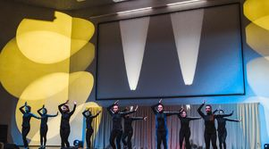
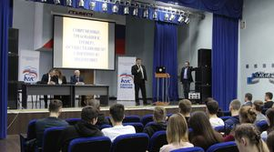
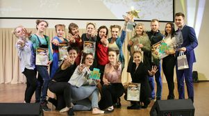

49.03.03
Спортивно-оздоровительный туризм
Специалисты по рекреативно-оздоровительной туристской деятельности.
9 программ: проходные баллы, бюджетные и платные места, описание направлений подготовки.
Специалисты по рекреативно-оздоровительной туристской деятельности.

Адаптивная физическая культура и исследования в области медицинской реабилитации.

Организация взаимодействия с молодёжными сообществами по месту учёбы, работы и отдыха.

Управление в области спорта и физкультурно-оздоровительных услуг.

Подготовка учителей для преподавания физической культуры и безопасности жизнедеятельности.

Подготовка педагогов в области физической культуры и спорта.

Организация туров, документационное и информационное сопровождение клиентов.

Подготовка педагогов и тренеров для избранного вида спорта.

Двигательная рекреация, реабилитация и оздоровительные технологии.
Программы по запросу не найдены.